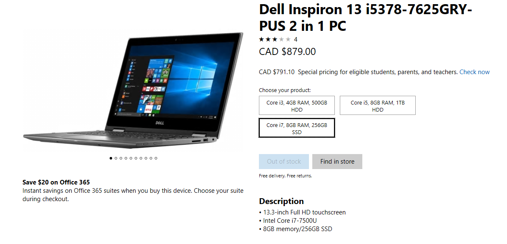

Why do people build PC's? Many people believe a PC is more powerful, reliable, and cheaper compared portable solutions like laptops. Moreover, it is fun to build a PC by yourself. Before we see if building a PC is actually cheaper than buying a pre-built computer, let's take a look at the crucial components to the PC
The PC is made of a few but crucial parts. Some of these components include:
The CPU, also known as the central processing unit,is the brain of the PC. The CPU can often be one of the most expensive parts to the PC, although there are many cheap options out there.
The Motherboard the a circuit board that houses all of the pieces of hardware of the PC and includes all the ports to give the pc functionality.
The GPU is also known as the graphics processing unit, which renders the visuals onto the moniter.
The random access memory, or RAM stores temporary data and helps
The power supply is the heart of the computer. It delivers power the right amount of power safely to each component of the PC.
The storage stores all the applications and data to be accessed whenever the user wants. These are hard drives or solid-state drives (SSD)
There are many other parts to the PC. This includes the case, fans and cooling solutions, lighting, moniter, keyboard, and the mouse.
This is the only piece of software that is crucial for the PC to function. The operating system, or OS, allows the user to access the applications and allows them to navigate a friendly interface.
| Component | Function |
|---|---|
| Case | Houses all the components |
| Fans and Cooling Solutions | Keeps all the components like the cpu and gpu cool |
| Moniter | Shows the users |
| Mouse | Allows the user to interact with the computer |
| Keyboard | Allows the user to type words on the computer |
So after we take a look at all components, let’s take a look at some laptop and pre-built options at some different price points:
For entry-level laptops, or budget options, which are around the under $500 price range, I have gathered a few options.
Chromebooks are nice for light use, which makes it a good option if you choose to take notes, browse the web, or watch videos. However, being Chrome OS, the computer comes with it’s limitations. You can only download apps from the Chrome Store, giving a limited amount of downloadable apps. Chrome OS does not give the same amount of freedom as Windows, but it does come cheaper.
For a PC that you could put together by yourself,the under $500 price range is a tight budget. Here, I have put together an AMD option.
This is an Intel version of a budget PC
For a PC to funtion, there needs to be a graphics processor, more commonly known as the GPU. However, since the budget is tight, these APUs(Accelerated Processing Unit), which include both the CPU and GPU will work fine.
*These PC are not fully functional yet. You still need to put in your own mouse, keyboard, moniter, and operating system
*Note that I tried to choose only parts that were not on sale. You can easily find a better deal or find a more powerful PC for the same price if you fish for deals.
*Components need to be compatible with each other to function. The prices may vary due to compatibility of different components
*CPU, GPU, RAM prices vary due to their nature. Waiting for the right time when stocks are high can help save some money
<Consumer level is more expensive than entry-level (Ryzen). It can also be said that consumer-level is also the mid-range price, since it is just under high-end. I would say the jump from entry level to consumer level would have the biggest boost in performance and functionality. Due to the price range, it can be said consumer-level will be about $1000 in price
Here are some consumer priced laptops:
Take a look at some pre-built desktops at this price range
Now for the self-built PCs, take a look at the different component choices for this price range:
High end is anything above the mid-range price tag; however, I will not go all out. First I will show what you can build for under $2000, but this time being fully functional. The second comparison I will do is choose a few laptops with the most powerful hardware and see how much money it will take to build one yourself.
note that gpu prices are inflated due to them being low stock. For some GPUs, they will be out of stock for a while
also, I did not include a copy of windows in the price list. A standard copy of Windows 10 is about $160 not on sale. You can find goods deals for operating systems.
As you can see, I did not cheap out on the high-end PC build, and it was still at least $1000 cheaper than the laptops, even with the operating system(I did not include it in the pictures). So in conclusion, building a PC is only profitable when you are going for the high-end market. On the budget side, if you need a desktop, try buying refurbished desktops or some cheap laptops. For the mid-range computers, it would be based on personal preferences. If you ask "which one is better for yourself?", then you need to look at your own needs. Laptops work on the go, while desktop PCs have better performance and reliability . However, on the high-end side of things, building your own PC can prove to save a lot of money, but if you need that portability, you can never go wrong with a laptop.
*note all prices are in CAD
*prices retrieved from Amazon, Newegg,and Microsoft Store
*prices do not include taxes and shipping fees
Ryzen. (n.d.). In Wikipedia. Retrieved February 20, 2018 from https://en.wikipedia.org/wiki/Ryzen
L. (n.d.). Linus Tech Tips. Retrieved February 25, 2018, from https://www.youtube.com/user/LinusTechTips